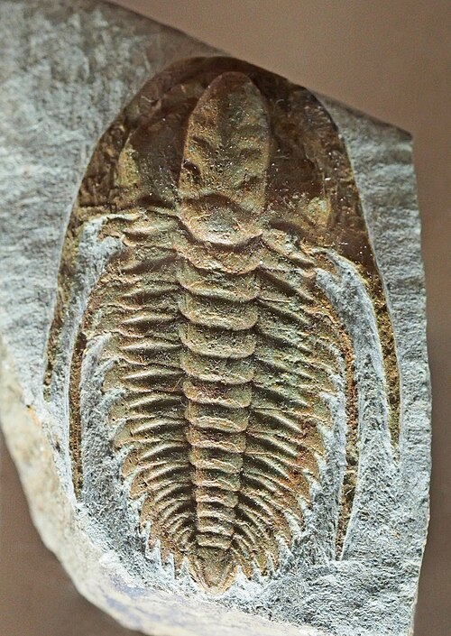
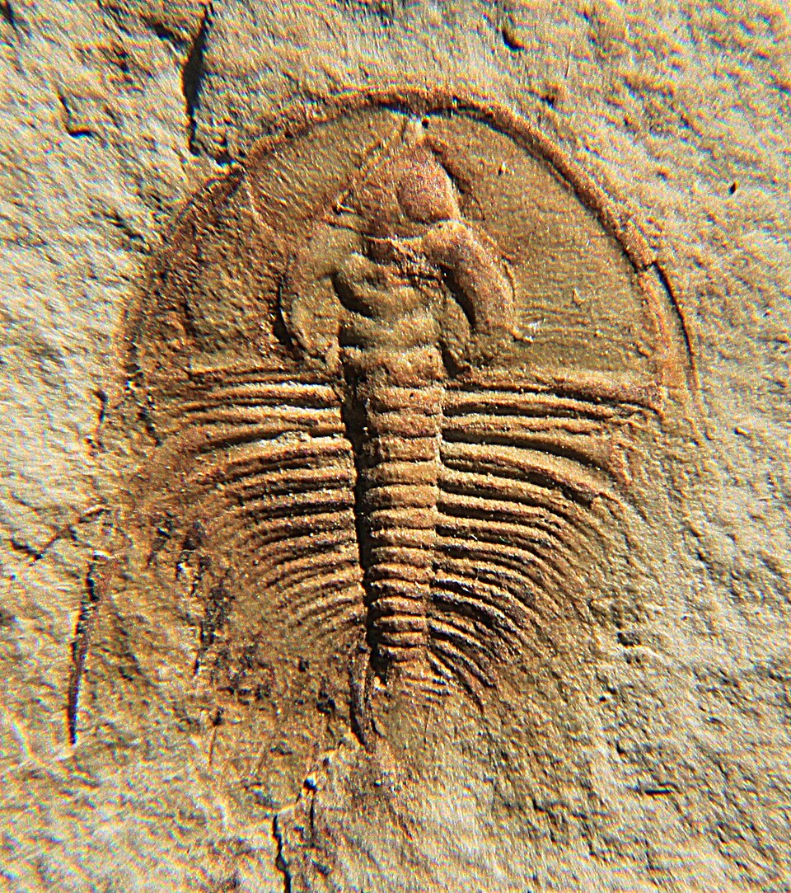
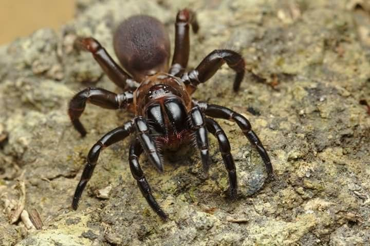
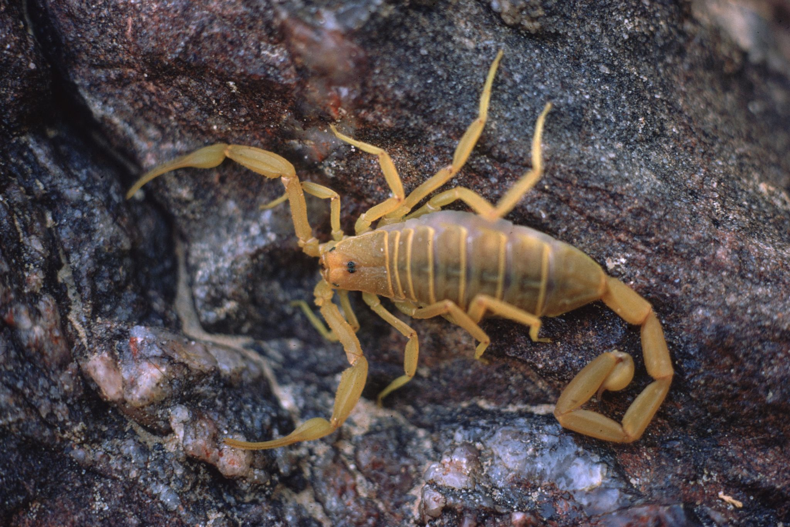
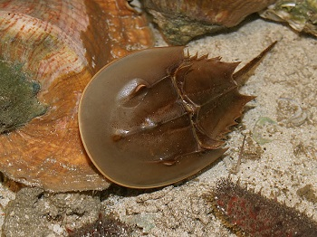

Hace unos 521 millones de años atrás, en el periodo Cámbrico temprano, la Tierra experimentó una diversificación masiva de especies, evento conocido como "explosión cámbrica", en donde aparecen por primera vez los trilobites. Para darnos una idea, antes de la era Paleozoica, en el pre-cámbrico, los mares albergaban organismos unicelulares y, más adelante en el Arcaico, multicelulares simples. Los fósiles de trilobites más antiguos que se han encontrado pertenecen a los géneros Fallotaspis y Olenellus.


Se cree que los quelicerados, las arañas, escorpiones y cangrejos herradura están emparentados con estos amigos prehistóricos, quienes sobrevivirían hasta el final del Paleozoico.


